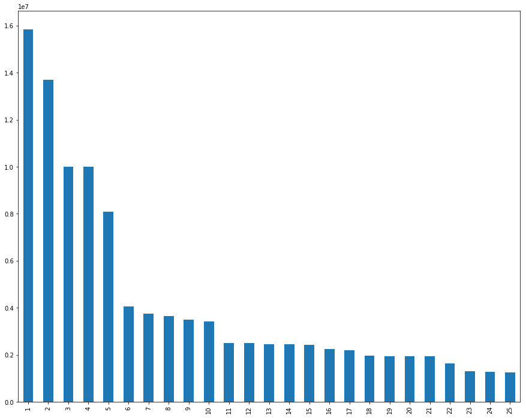

Background and problem statement
This is the second post in a multi-part post. If you missed the first post, you can get it here. In part 2 of this post I'm am looking to collect all the NFL Salary cap data from the 32 teams spread over individual webpages from www.spoctrac.com and merge that into 1 large data set. This final data set can then be used to answer questions such as:
- Who are the highest paid players in the NFL?
- Which positions are the highest paid?
- For those players that are highest paid where do they rank statistically?
- For those teams that have the highest paid positions where do they rank statistically? Football is after all a team sport :football:
- And to be push the limits is there a correlation between the number of times a player is mentioned on twitter and their salary?
Imports and Function definitions
Throughout this post I'm using the BeautifulSoup library to parse the webpage and the urllib library to get pages. I have also defined 2 functions to support this.
- get_page is used to build a list of 32 URLS, 1 for each of the teams that will be used iterated over and parsed using the next function.
- get_team_table accepts a url, opens that as a page, and then uses BeautufilSoup to parse it and return a soup object.
from urllib.request import urlopen
from bs4 import BeautifulSoup
base_url = "http://www.spotrac.com/nfl/"
def get_page(url):
page = urlopen(base_url)
soup = BeautifulSoup(page, 'lxml')
file = open("spotrac_urls.txt", 'w')
file.write(str(soup))
file.close()
def get_team_table(url):
page = urlopen(url)
soup = BeautifulSoup(page, 'lxml')
Get all the BASE URLS
The http://www.spotrac.com/nfl/ has links for each of the 32 NFL teams. On those pages there is a datatable that has that teams Salary cap data. To get those links so that they can be used later used the get_page function and write the contents to a file.
with open("spotrac_urls.txt", 'r') as file:
for line in file:
line = line.strip()
from bs4 import BeautifulSoup
page = open("spotrac_urls.txt", 'r')
soup = BeautifulSoup(page, "lxml")
div = soup.find("div","subnav-posts")
# This is a terribly simple regex to loop through all the div tags and find all the anchor tags.
# Then I just get the href and print them out.
import re
links = div.find_all('a')
for link in links:
print(link.get('href'))
len(links)
http://www.spotrac.com/nfl/arizona-cardinals/cap/
http://www.spotrac.com/nfl/atlanta-falcons/cap/
http://www.spotrac.com/nfl/baltimore-ravens/cap/
http://www.spotrac.com/nfl/buffalo-bills/cap/
http://www.spotrac.com/nfl/carolina-panthers/cap/
http://www.spotrac.com/nfl/chicago-bears/cap/
http://www.spotrac.com/nfl/cincinnati-bengals/cap/
http://www.spotrac.com/nfl/cleveland-browns/cap/
http://www.spotrac.com/nfl/dallas-cowboys/cap/
http://www.spotrac.com/nfl/denver-broncos/cap/
http://www.spotrac.com/nfl/detroit-lions/cap/
http://www.spotrac.com/nfl/green-bay-packers/cap/
http://www.spotrac.com/nfl/houston-texans/cap/
http://www.spotrac.com/nfl/indianapolis-colts/cap/
http://www.spotrac.com/nfl/jacksonville-jaguars/cap/
http://www.spotrac.com/nfl/kansas-city-chiefs/cap/
http://www.spotrac.com/nfl/los-angeles-chargers/cap/
http://www.spotrac.com/nfl/los-angeles-rams/cap/
http://www.spotrac.com/nfl/miami-dolphins/cap/
http://www.spotrac.com/nfl/minnesota-vikings/cap/
http://www.spotrac.com/nfl/new-england-patriots/cap/
http://www.spotrac.com/nfl/new-orleans-saints/cap/
http://www.spotrac.com/nfl/new-york-giants/cap/
http://www.spotrac.com/nfl/new-york-jets/cap/
http://www.spotrac.com/nfl/oakland-raiders/cap/
http://www.spotrac.com/nfl/philadelphia-eagles/cap/
http://www.spotrac.com/nfl/pittsburgh-steelers/cap/
http://www.spotrac.com/nfl/san-francisco-49ers/cap/
http://www.spotrac.com/nfl/seattle-seahawks/cap/
http://www.spotrac.com/nfl/tampa-bay-buccaneers/cap/
http://www.spotrac.com/nfl/tennessee-titans/cap/
http://www.spotrac.com/nfl/washington-redskins/cap/
32
from urllib.request import urlopen
def get_team_table(url):
page = urlopen(url)
soup = BeautifulSoup(page, 'lxml')
data_rows = [row for row in soup.find("table", "datatable").find_all("tr")]
return data_rows
Get the data
For all 32 teams we get the table rows using the get_team_table functions
# create an empty list
team_data = []
for link in links:
team_data.append(get_team_table(link.get('href')))
#Make sure there are 32 elements in team_data
len(team_data)
The heavy lifting
Build player_data from the combined table rows that were parsed from all the links above. This takes some time to execute.
#data_rows = [row for row in soup.find("td", "center").find_all("tr")]
table_data = []
#soup = BeautifulSoup(team_data[0], 'lxml')
#This needs to be a nested for loop because inner items of the list are BeautifulSoup Elements
for row in team_data:
for element in row:
#print(type(element))
if soup.find_all("td", attrs={"class":" right xs-hide "}) is not None:
table_data.append(element.get_text())
player_data = []
for row in table_data:
player_data.append(row.split("\n"))
#print(player_data)
len(player_data)
Loada DataFrame and reshape the data
In the next cells I load the data into a DataFrame and reshape it so that it has 12 columns, fix the header, and remove the invalid rows
import pandas as pd
df = pd.DataFrame(player_data)
df = df.drop(14, 1)
df = df.drop(0, 1)
df = df.drop(1, 1)
df = df.drop(df.index[[0]])
#df.set_index(1, inplace=True)
print(df.shape)
df.head()
|
2 |
3 |
4 |
5 |
6 |
7 |
8 |
9 |
10 |
11 |
12 |
13 |
| 1 |
Larry Fitzgerald |
WR |
$11,000,000 |
$2,500,000 |
- |
- |
- |
$2,350,000 |
- |
- |
$15,850,000 |
9.44 |
| 2 |
Patrick Peterson |
CB |
$9,750,000 |
$3,072,377 |
- |
- |
$250,000 |
$634,588 |
- |
($18,048,518) |
$13,706,965 |
8.16 |
| 3 |
Chandler Jones |
OLB |
$7,000,000 |
$3,000,000 |
- |
- |
- |
- |
- |
($31,000,000) |
$10,000,000 |
5.96 |
| 4 |
Jared Veldheer |
RT |
$6,500,000 |
$1,250,000 |
$250,000 |
- |
- |
$2,000,000 |
- |
($6,500,000) |
$10,000,000 |
5.96 |
| 5 |
Tyrann Mathieu |
FS |
$4,750,000 |
$3,100,000 |
- |
- |
$250,000 |
- |
- |
($17,400,000) |
$8,100,000 |
4.82 |
players = []
for row in team_data[0]:
if row.get_text("tr") is not None:
players.append(row)
column_headers = [col.get_text() for col in players[0].find_all("th") if col.get_text()]
len(column_headers)
df.columns = column_headers
df.head()
|
Active Players (53) |
Pos. |
Base Salary |
Signing Bonus |
Roster Bonus |
Option Bonus |
Workout Bonus |
Restruc. Bonus |
Misc. |
Dead Cap |
Cap Hit |
Cap % |
| 1 |
Larry Fitzgerald |
WR |
$11,000,000 |
$2,500,000 |
- |
- |
- |
$2,350,000 |
- |
- |
$15,850,000 |
9.44 |
| 2 |
Patrick Peterson |
CB |
$9,750,000 |
$3,072,377 |
- |
- |
$250,000 |
$634,588 |
- |
($18,048,518) |
$13,706,965 |
8.16 |
| 3 |
Chandler Jones |
OLB |
$7,000,000 |
$3,000,000 |
- |
- |
- |
- |
- |
($31,000,000) |
$10,000,000 |
5.96 |
| 4 |
Jared Veldheer |
RT |
$6,500,000 |
$1,250,000 |
$250,000 |
- |
- |
$2,000,000 |
- |
($6,500,000) |
$10,000,000 |
5.96 |
| 5 |
Tyrann Mathieu |
FS |
$4,750,000 |
$3,100,000 |
- |
- |
$250,000 |
- |
- |
($17,400,000) |
$8,100,000 |
4.82 |
#The header repeated itself in the data. This didn't reveal itself until the data type conversion step below
#but this fixes all occurrences of it.
rows_to_be_dropped = df.loc[df['Cap Hit'] == 'Cap %'].index
df = df.drop(rows_to_be_dropped)
#Apply a regex to convert the 'Cap Hit' column from a string to a float.
df['Cap Hit'] =(df['Cap Hit'].replace('[\$,)]', "", regex=True).replace( '[(]','-', regex=True ).astype(float))
#Sanity check to make sure it worked.
df['Cap Hit'].sum()
df.shape
#53*32 = 1696 there should be this many rows in the data set, how did I end up with 3 extra??
#That's such an odd number?
import matplotlib.pyplot as plt
df['Cap Hit'].head(25).plot(kind="bar",figsize=(15,12))
plt.show()

df['Cap Average By Game'] = df['Cap Hit']/16
df.head(25)
#Assuming 16 games & all his bunuses - Larry Fitzgerald makes $9.9M a game!!
|
Active Players (53) |
Pos. |
Base Salary |
Signing Bonus |
Roster Bonus |
Option Bonus |
Workout Bonus |
Restruc. Bonus |
Misc. |
Dead Cap |
Cap Hit |
Cap % |
Cap Average By Game |
| 1 |
Larry Fitzgerald |
WR |
$11,000,000 |
$2,500,000 |
- |
- |
- |
$2,350,000 |
- |
- |
15850000.0 |
9.44 |
990625.0000 |
| 2 |
Patrick Peterson |
CB |
$9,750,000 |
$3,072,377 |
- |
- |
$250,000 |
$634,588 |
- |
($18,048,518) |
13706965.0 |
8.16 |
856685.3125 |
| 3 |
Chandler Jones |
OLB |
$7,000,000 |
$3,000,000 |
- |
- |
- |
- |
- |
($31,000,000) |
10000000.0 |
5.96 |
625000.0000 |
| 4 |
Jared Veldheer |
RT |
$6,500,000 |
$1,250,000 |
$250,000 |
- |
- |
$2,000,000 |
- |
($6,500,000) |
10000000.0 |
5.96 |
625000.0000 |
| 5 |
Tyrann Mathieu |
FS |
$4,750,000 |
$3,100,000 |
- |
- |
$250,000 |
- |
- |
($17,400,000) |
8100000.0 |
4.82 |
506250.0000 |
| 6 |
Drew Stanton |
QB |
$2,550,000 |
$1,000,000 |
$500,000 |
- |
- |
- |
- |
($3,550,000) |
4050000.0 |
2.41 |
253125.0000 |
| 7 |
Jermaine Gresham |
TE |
$2,000,000 |
$1,750,000 |
- |
- |
- |
- |
- |
($13,000,000) |
3750000.0 |
2.23 |
234375.0000 |
| 8 |
Corey Peters |
DT |
$2,750,000 |
$666,668 |
$93,750 |
- |
$150,000 |
- |
- |
($3,566,668) |
3660418.0 |
2.18 |
228776.1250 |
| 9 |
Justin Bethel |
CB |
$2,000,000 |
$1,500,000 |
- |
- |
- |
- |
- |
($3,500,000) |
3500000.0 |
2.08 |
218750.0000 |
| 10 |
Antoine Bethea |
SS |
$2,000,000 |
$666,666 |
$500,000 |
- |
$250,000 |
- |
- |
($4,250,000) |
3416666.0 |
2.04 |
213541.6250 |
| 11 |
Phil Dawson |
K |
$2,000,000 |
$500,000 |
- |
- |
- |
- |
- |
($3,000,000) |
2500000.0 |
1.49 |
156250.0000 |
| 12 |
Josh Mauro |
DT |
$750,000 |
$500,000 |
$1,250,000 |
- |
- |
- |
- |
($3,000,000) |
2500000.0 |
1.49 |
156250.0000 |
| 13 |
Deone Bucannon |
ILB |
$1,471,255 |
$981,673 |
- |
- |
- |
- |
- |
($981,673) |
2452928.0 |
1.46 |
153308.0000 |
| 14 |
Haason Reddick |
ILB |
$465,000 |
$1,985,539 |
- |
- |
- |
- |
- |
($7,942,157) |
2450539.0 |
1.46 |
153158.6875 |
| 15 |
Karlos Dansby |
ILB |
$1,000,000 |
$700,000 |
$200,000 |
- |
$100,000 |
- |
$250,000 |
($1,800,000) |
2250000.0 |
1.34 |
140625.0000 |
| 16 |
Robert Nkemdiche |
DE |
$840,936 |
$1,113,745 |
- |
- |
- |
- |
- |
($6,536,854) |
1954681.0 |
1.16 |
122167.5625 |
| 17 |
Tramon Williams |
CB |
$1,100,000 |
$500,000 |
$350,000 |
- |
- |
- |
- |
($1,600,000) |
1950000.0 |
1.16 |
121875.0000 |
| 18 |
Alex Boone |
G |
$900,000 |
- |
$437,500 |
- |
- |
- |
$600,000 |
($1,400,000) |
1937500.0 |
1.15 |
121093.7500 |
| 19 |
John Brown |
WR |
$1,797,000 |
$135,725 |
- |
- |
- |
- |
- |
($135,725) |
1932725.0 |
1.15 |
120795.3125 |
| 20 |
A.Q. Shipley |
C |
$775,000 |
$362,500 |
$250,000 |
- |
- |
- |
$250,000 |
($1,500,000) |
1637500.0 |
0.98 |
102343.7500 |
| 21 |
Jaron Brown |
WR |
$775,000 |
$317,500 |
$218,750 |
- |
- |
- |
- |
($1,092,500) |
1311250.0 |
0.78 |
81953.1250 |
| 22 |
Troy Niklas |
TE |
$968,632 |
$311,509 |
- |
- |
- |
- |
- |
($311,509) |
1280141.0 |
0.76 |
80008.8125 |
| 23 |
Budda Baker |
S |
$465,000 |
$776,819 |
- |
- |
- |
- |
- |
($3,882,732) |
1241819.0 |
0.74 |
77613.6875 |
| 24 |
Frostee Rucker |
DT |
$1,000,000 |
$80,000 |
- |
- |
- |
- |
- |
($1,080,000) |
1080000.0 |
0.64 |
67500.0000 |
| 25 |
Andy Lee |
P |
$1,000,000 |
- |
- |
- |
- |
- |
- |
($1,000,000) |
1000000.0 |
0.60 |
62500.0000 |